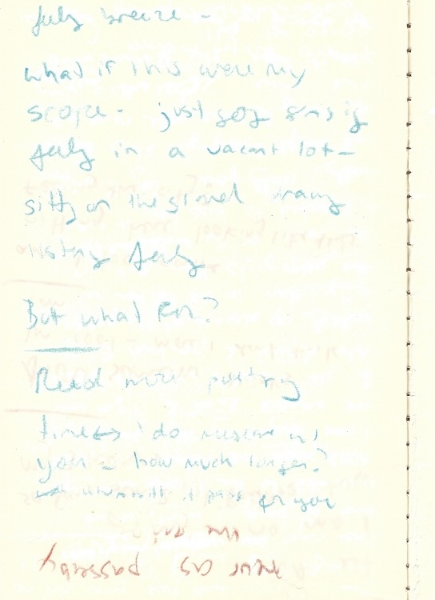
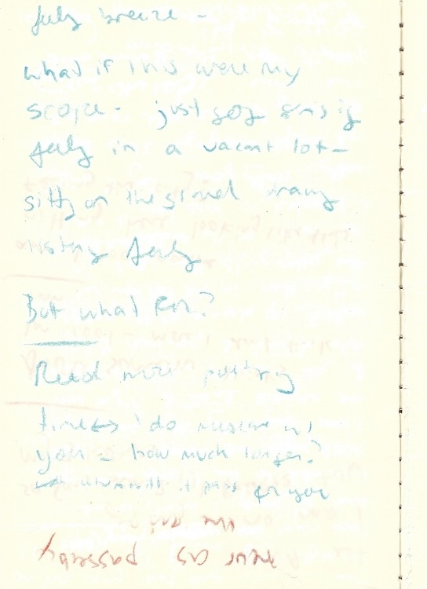
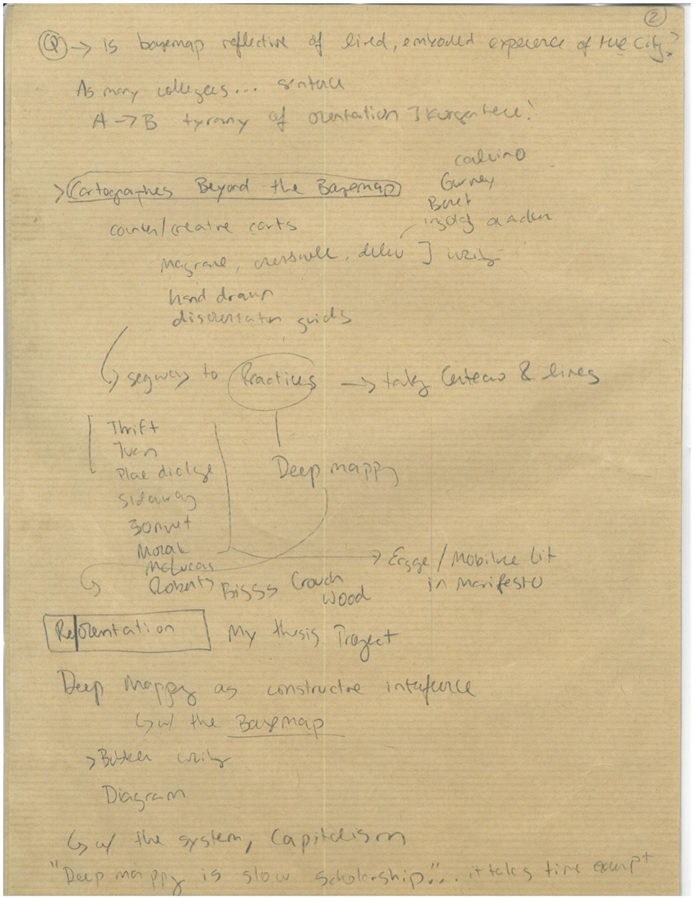
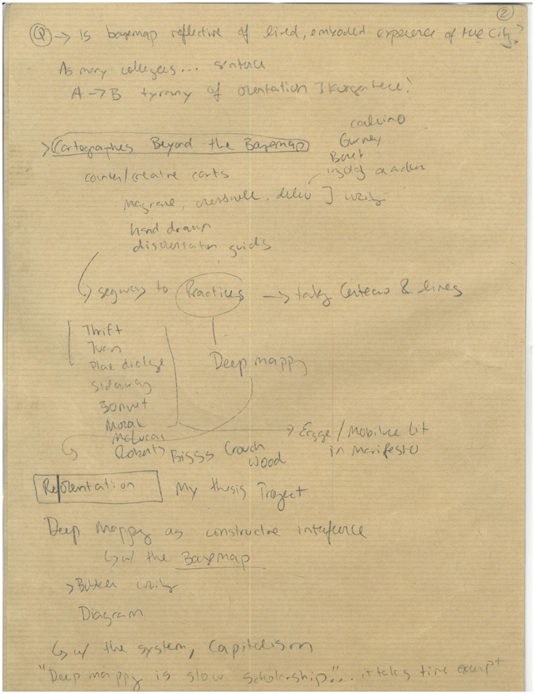

 



Cresswell, Tim. 2019. “Writing Place.” In Maxwell Street: Writing and Thinking Place, 1–20. University of Chicago Press. https://doi.org/10.7208/9780226604398-002.
Darnton, Robert. 2000. Review of Extraordinary Commonplaces, by Kevin Sharpe. The New York Review of Books, December 21, 2000. https://www.nybooks.com/articles/2000/12/21/extraordinary-commonplaces/.
Foucault, Michel. 1977. “A Preface to Transgression.” In Language, Counter-Memory, Practice: Selected Essays and Interviews, edited by Donald Bouchard, translated by Donald Bouchard and Sherry Simon, 29–52. Ithaca, N.Y: Cornell University Press.
Gebert, Rosemary. 1987. “Form Drawing.” Child and Man 21 (1).
Lefebvre, Henri. 2013. Rhythmanalysis: Space, Time and Everyday Life. Translated by Gerald Moore and Stuart Elden. Bloomsbury Publishing Plc. https://doi.org/10.5040/9781350284838.
Loveless, Natalie. 2019. How to Make Art at the End of the World: A Manifesto for Research-Creation. Duke University Press.
McLucas, Clifford. 2000. “Deep Mapping.” Clifford McLucas. 2000. https://cliffordmclucas.info/deep-mapping.html.
Pearson, Mike, and Michael Shanks. 2001. Theatre/Archaeology. London ; New York: Routledge.
Roberts, Les. 2018a. Spatial Anthropology: Excursions in Liminal Space. Rowman and Littlefield.
———. 2018b. “Spatial Bricolage: The Art of Poetically Making Do.” Special Issue, Humanities 7 (2): 43. https://doi.org/10.3390/h7020043.
Steiner, Rudolf. 1923. “A Lecture on Eurythmy.” Archive. Rudolf Steiner Archive. August 26, 1923. https://rsarchive.org/Lectures/19230826p01.html.
Stewart, Kathleen. 2011. “Atmospheric Attunements.” Environment and Planning D: Society and Space 29 (3): 445–53. https://doi.org/10.1068/d9109.
Tuin, Iris van der, and Nanna Verhoeff. 2022. “Navigation.” In Critical Concepts for the Creative Humanities. Rowman & Littlefield. https://rowman.com/ISBN/9781538147733/Critical-Concepts-for-the-Creative-Humanities.